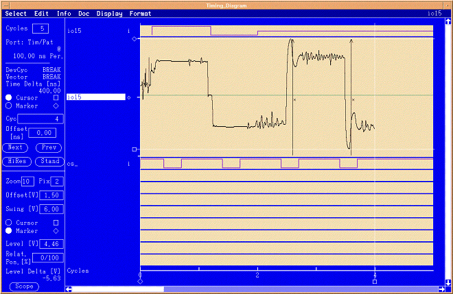
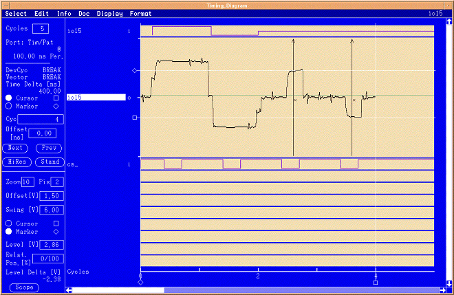

Drive levels
The figures below show waveforms received from the device on a pin of the device's data bus. For reference, a trace of the CS pin is also shown. The first two cycles of the trace show the test system driver driving a high voltage for a "1", followed by the drive of a low voltage for a "0" in the next cycle. The next two cycles show the device's output driving a"1" followed by a "0" in the last cycle. The termination setting during the last two cycles determines the quality of the signal. The figures below show different ioh and iol values for the programmable load.


Termination loads have an important impact on signal fidelity. In the first figure shown above, the programmable load condition is set to 0 mA. This, in essence, creates an open on the test system side of the transmission line. The result of this condition can be seen in the ringing and overshoot/undershoot of the signal when the device is driving.
In contrast, the signal in the second figure is well behaved because the ioh and iol are set to the programmable load maximum settings. The logical 1 and 0 driven by the device can be clearly seen in the last two cycles of the second figure.